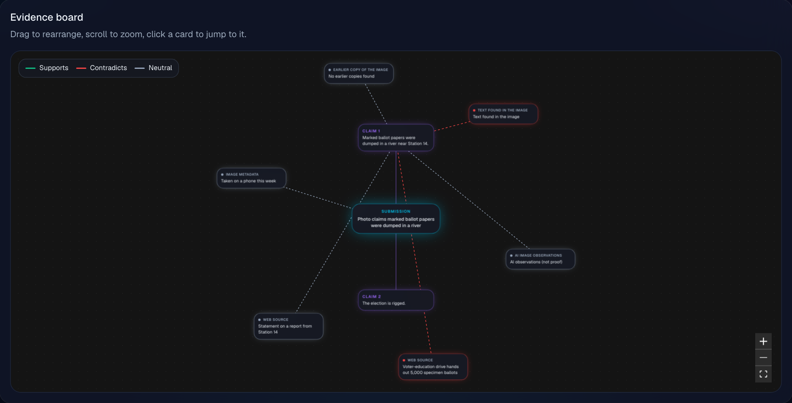
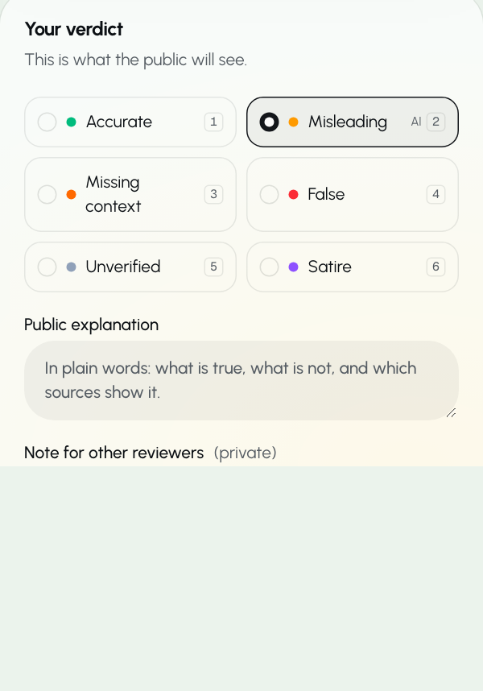

ElectionVerify
Check before you forward.
AI-assisted fact-checking for election news in India.
Family group
Forwarded many timesPolling stations will close at 2 PM this year. Go early!
Forwarded many timesEVMs can be hacked with Bluetooth from a phone!
ForwardedYou can vote by SMS this time. Just reply YES.
!
Fake election news
spreads in seconds.
One forwarded message can mislead thousands of voters before anyone checks it.
Step 1
Send it to
ElectionVerify
Paste a news link, a forwarded message or a screenshot.
🔗 Link
💬 Message
🖼️ Image

Evidence in about a minute

AI suggests. It never decides.


Every claim cites its source
Step 2
A human reviewer
makes the call.
Reviewers read the evidence, choose the verdict and explain it in plain words.


FALSE
Step 3
A verified answer
for everyone.
Free to read, search and share. In English, Hindi and Urdu.
↗ Share
🔎 Search
अ · ع · A

Built on trusted sources
Admins choose the reviewers and the sources. Every action is logged.
Check before
you forward.
election-verify.vercel.app
Made by Abdullah Rizwan, Uday and Sandeep